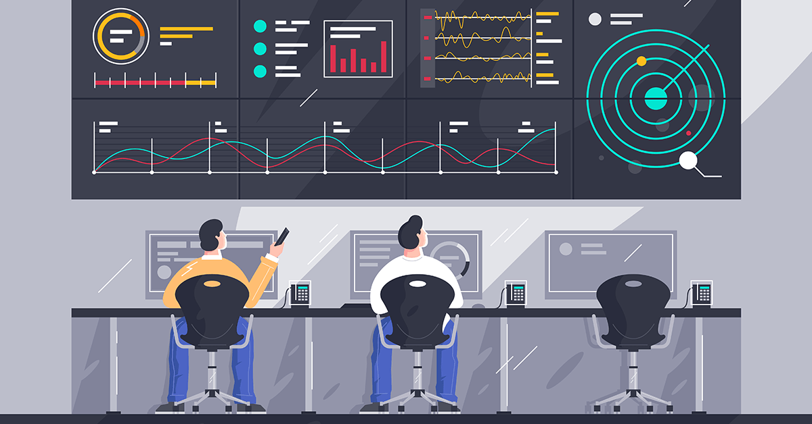

Monitoreo -- Monitoreo Continuo
El monitoreo es crucial para el éxito de DevOps. No se trata solo de verificar si el software está funcionando correctamente, sino de recolectar datos en tiempo real para tomar decisiones informadas.
Monitoreo proactivo: El monitoreo en DevOps es continuo, lo que permite detectar problemas antes de que afecten a los usuarios finales. Esto incluye monitoreo del rendimiento, errores, uso del sistema y seguridad.
Herramientas de monitoreo: Herramientas como Prometheus, Nagios y Grafana permiten a los equipos ver métricas clave, realizar análisis de tendencias y recibir alertas sobre posibles fallos o áreas de mejora.